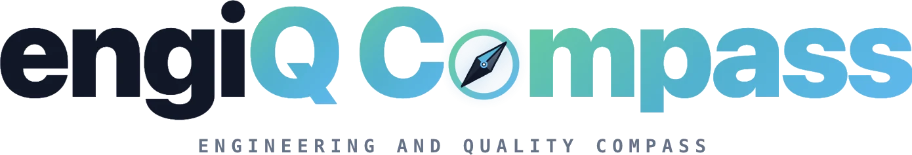

engiQ Compass: Plattform für Engineering und Qualitätsmanagement
Durchgängige Software von der Projektierung und normkonformen Auslegung über geführte Prüfabläufe bis zur revisionssicheren Abnahme. Eigene Entwicklung, alle neun Module umgesetzt. engiQ systems ist in der Gründungsphase, der Marktstart steht bevor.
engiq.systems ↗Der Link führt auf die Homepage von engiQ systems.